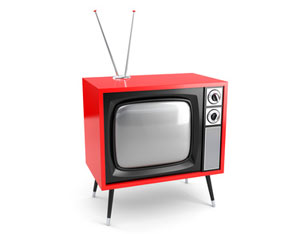

FOTOLIA
According to the Energy Star program, the 275 million TVs currently in use in the United States consume more than 50 billion kWh of energy each year — enough to power all the homes in the state of New York for one year.